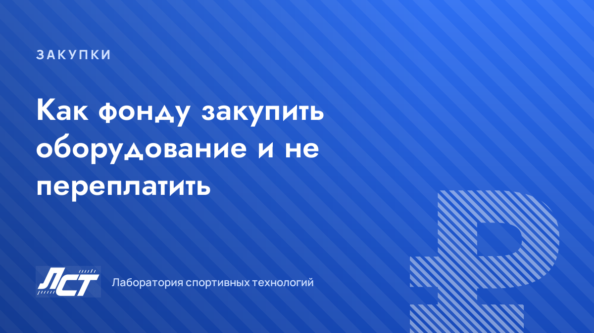

Закупки
Как спортивному фонду закупить оборудование и не переплатить
18 сентября 2026 · 4 мин чтения

Разница в цене между сопоставимыми по функциям приборами доходит до двух-трёх раз. И чаще всего переплата закладывается не на торгах, а гораздо раньше — в момент, когда пишется техническое задание. Разбираем процесс по шагам: от методики до приёмки.
Почему переплачивают
- ТЗ переписано из брошюры одного бренда — вместе с уникальными габаритами и параметрами, которые больше никто не повторяет. Конкуренция исчезает ещё до объявления закупки.
- Покупают имя. За известным логотипом часто стоит та же элементная база, что и у более доступных решений.
- Считают ценник, а не стоимость владения. Подписка на ПО, расходники и сервис за три года легко догоняют цену самого прибора.
- Берут функции «на всякий случай». Половина режимов не используется ни разу, но входит в цену.
- Закупают партию без пилота. Неудобство, которое всплывает на второй неделе эксплуатации, тиражируется сразу на весь регион.
Шаг 1. Начните с методики, а не с каталога
До того как смотреть приборы, ответьте на пять вопросов. Они определяют требования лучше любого обзора рынка.
01Какие показатели измеряем — и какое решение будет приниматься по результату.
02Как часто и кто измеряет — тренер между тренировками или методист по расписанию — это разные требования к скорости и простоте.
03Где хранятся данные — экран прибора, выгрузка в таблицу или интеграция с вашей базой.
04Кто интерпретирует — и в каком виде нужен отчёт для руководства и родителей.
05Какая точность реально нужна — для отбора и мониторинга динамики требования существенно ниже, чем для научной работы.
Точность имеет цену
Требование погрешности ±1 мм там, где для задачи достаточно ±5 мм, способно удвоить бюджет закупки и сократить число участников до одного.
Шаг 2. ТЗ, которое не сужает конкуренцию
- Функциональные требования вместо марок: «измерение высоты прыжка по времени полёта», а не «прибор модели X».
- Диапазоны вместо точечных значений: «погрешность не более 1 см», а не «0,97 см».
- Каждый параметр — с обоснованием: если не можете объяснить, зачем он, его быть не должно.
- Отдельным блоком — требования к ПО: выгрузка данных, число устройств, работа без интернета.
- Отдельным блоком — гарантия, сроки ремонта и наличие подменного фонда.
- Формулировка «или эквивалент» с описанием критериев эквивалентности.
Шаг 3. Считайте стоимость владения, а не ценник
| Статья расходов | Что уточнить у поставщика |
|---|---|
| Прибор | что входит в комплект, что докупается отдельно |
| ПО и лицензии | бессрочно или подписка, на сколько устройств и пользователей |
| Расходники, запчасти | наличие на складе, срок поставки, цена |
| Поверка и калибровка | требуется ли, с какой периодичностью и кто выполняет |
| Обучение персонала | входит ли в поставку, очно или дистанционно |
| Гарантия и ремонт | срок, что покрывает, сроки реакции, подменный прибор |
| Логистика | доставка в регион, упаковка, кто оплачивает возврат по гарантии |
Шаг 4. Обоснование цены и работа с предложениями
- Запрашивайте минимум три коммерческих предложения по сопоставимым конфигурациям — сравнение цен сопоставимых предложений остаётся базовым способом обосновать начальную цену.
- Сравнивайте одинаковый объём: прибор + ПО + гарантия + доставка, а не «голые» позиции против полного комплекта.
- Фиксируйте срок действия предложения и условия по курсу для импортных компонентов.
- Просите структуру цены: отдельно оборудование, отдельно работы, отдельно сервис — так видно, где заложена наценка.
Оговорка
Материал носит практический характер и не заменяет консультацию вашего контрактного управляющего или юриста: конкретные процедуры зависят от того, по каким правилам закупается ваша организация.
Шаг 5. Пилот перед серией
01Возьмите 1–2 единицы — и поставьте их в самую загруженную точку, а не в кабинет методиста.
02Три-четыре недели реальной работы — с теми людьми, которые будут пользоваться прибором каждый день.
03Соберите чек-лист приёмки — что понравилось, что мешает, чего не хватает — в формулировках для будущего ТЗ.
04Только потом масштабируйте — и заранее закрепите в договоре возможность доработки под вашу методику.
Чек-лист перед подписанием
- Все заявленные параметры подтверждены документами на изделие, а не только сайтом.
- Гарантия — в договоре, с указанием срока реакции и порядка ремонта.
- Понятно, что происходит при поломке на выезде и есть ли подменный фонд.
- Есть контакт живой техподдержки, а не только форма на сайте.
- ПО работает без постоянного интернета, данные выгружаются в понятном формате.
- Комплект поставки расписан по позициям и количеству.
- Указаны условия доработки и брендирования, если они нужны.
- Зафиксированы сроки поставки и ответственность за их нарушение.
Типичные ошибки
- Выбор по одной цифре в характеристиках без привязки к задаче.
- Экономия на обучении: прибор есть, им никто не пользуется.
- Разные модели в разных школах одного региона — данные несопоставимы.
- Нет ответственного за данные: измерения делают, но никто их не анализирует.
- Закупка в конце года «чтобы освоить бюджет» — без пилота и без методики.